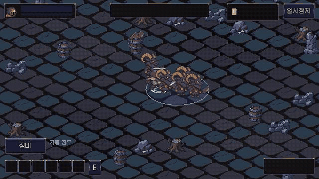

Tracefolio REPORTS & ISSUES
Tracefolio REPORTS & ISSUES DotAction수정사항
DotAction수정사항도끼 내려찍기 궤적 조기 종료·명중 FX 누락 수정
완료도끼 FX가 실제 내려찍기 이전에 끝나고 명중 시점도 어긋나 있었습니다. 궤적을 마지막 자세까지 연장하고 평타 섬광·파편·강타 충격파를 보강해 실제 정지·이동 공격에서 확인했습니다.
작업 결과
도끼 FX 수정·정규화·Godot 임포트·컴파일·정지/이동 평타 및 충전 강타 실제 렌더 확인을 완료했습니다.
변경 내용
적용 내용
- 원인: 기존 평타 FX가4
9번 자세에만 출력되어 실제 내려찍기1011번에는 투명했습니다. 명중은62% 시점이었으나 해당 시점의 도끼는 머리 위에 있었습니다. - weapons.axe.impact_ratio=0.86을 플레이어·동료가 공유하도록 수정했습니다. 피해량·공격 주기는 유지했습니다.
- 평타 잔상을 마지막 자세까지 연장하고 중심선/폭을 보강했습니다. 실제 피해 시점에 명중 섬광·파편을 생성합니다. 충전 강타의 베기·지면 충격파도 보강했습니다.
- 제작기 tools/export-ravager-slam-fx-v8.mjs와 정규화 출력 및 관련 프로젝트 지침을 저장했습니다.

검증
Godot4.7.2/GTX970 실제 전투6초에서 basic=true/basic_impact_fx=true/moving_trail_fx=true/special=true/data_errors=[]를 확인했습니다. 강타는4명 에어본/30px 상승/범위 밖 강타 피해0/충전 이동0/방패none을 유지했습니다. 실제 캡처에서 평타 명중 섬광과 강타 충격파를 직접 대조했습니다. FX 아틀라스의 마지막 프레임 불투명 픽셀은0→162, 최대 궤적은69→277로 확인했습니다. 별도 테스트·전체 회귀는 추가하지 않았습니다.
남은 사항
기존 종료 시 텍스처3개 해제 경고는 남습니다. 주관적 청감·장기 밸런스는 미확인입니다. 게임 자체 커밋·푸시·배포는 수행하지 않습니다.
작업 시간
- 제안 시간: 5~10분(실제 확인·FX/명중 시점 보정·원본 저장·중앙 보고 등록)
- 실제로 완료된 시간: 착수2026-11-17 17:17:05 KST. 구현·최초 실제 렌더17:21:32 KST(4분27초), 이후 이동 평타를 포함한 동일 범위 재확인을 완료했습니다. 게시 등록 시각은 보고서 메타데이터로 구분합니다.
- XERJ: 미사용 — 사용자 지침에 따라 XERJ는 연결 확인을 포함해 사용하지 않았습니다.